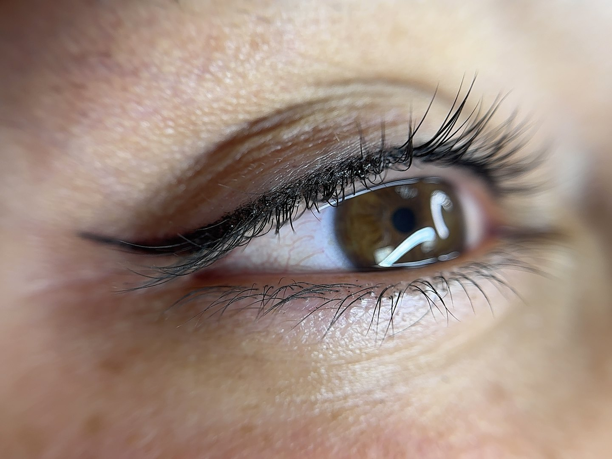

Top Eyeliner in Wilmington, MA & Salem, NH
Top Eyeliner is a permanent makeup procedure that defines the upper lash line with long-lasting pigment — from subtle lash enhancement to a polished eyeliner look.
Starting at $350 USD
Book Now
Effortless Eye Definition That Lasts Every Day
Imagine waking up with perfectly defined eyes without having to apply eyeliner every morning. At Adriana Beauty Services – Permanent Makeup, our Top Eyeliner treatment enhances your natural beauty by creating a clean, elegant line along the upper lash line that adds definition, depth, and lasting confidence.
For over 7 years, we have helped clients in Wilmington, MA and now Salem, NH simplify their beauty routines with customized permanent makeup services.
What Is Top Eyeliner?
Top Eyeliner is a permanent makeup procedure that places pigment along the upper lash line to create the appearance of fuller lashes and beautifully defined eyes.
The treatment can be customized to achieve various looks, from a subtle lash enhancement to a more noticeable eyeliner effect. During your consultation, we will discuss your goals and create a design that complements your eye shape and personal style.
The result is a polished appearance that remains beautiful throughout the day without smudging or fading.
Benefits of Top Eyeliner
Top Eyeliner offers numerous benefits for clients seeking a long-lasting beauty solution:
- Enhanced eye definition
- Fuller-looking lashes
- Smudge-proof appearance
- Waterproof results
- Reduced daily makeup routine
- Long-lasting pigment retention
- Customized eyeliner style
- Improved confidence and convenience
Many clients appreciate the ability to wake up looking refreshed and ready for the day.
Who Is a Good Candidate for Top Eyeliner?
Top Eyeliner may be ideal if you:
- Wear eyeliner regularly
- Want more definition around the eyes
- Have difficulty applying eyeliner
- Lead an active lifestyle
- Desire a low-maintenance beauty routine
- Want long-lasting makeup results
A consultation allows us to determine the most flattering style for your facial features and aesthetic preferences.
The Top Eyeliner Procedure
Every appointment begins with a personalized consultation and design process.
The procedure typically includes:
- Consultation and eye assessment
- Eyeliner design planning
- Application of topical numbing products
- Precise pigment implantation along the upper lash line
- Final review and aftercare instructions
Most appointments take approximately 2 to 3 hours.
Healing and Aftercare
Following the procedure, you may experience:
- Mild swelling
- Slight redness around the eyes
- Temporary darkening of the pigment
- Gradual softening as healing progresses
Most clients return to normal activities quickly while following recommended aftercare guidelines.
How Long Does Top Eyeliner Last?
Top Eyeliner results can last several years depending on factors such as:
- Skin type
- Lifestyle
- Sun exposure
- Skincare habits
- Pigment retention
Periodic touch-ups help maintain the desired appearance and color intensity.
Why Choose Adriana Beauty Services?
At Adriana Beauty Services – Permanent Makeup, every eyeliner treatment is customized to enhance your natural features.
Clients choose us because we provide:
- Over 7 years of permanent makeup experience
- Personalized consultations
- Precise application techniques
- High-quality pigments and equipment
- Natural-looking enhancements
- Locations in Wilmington, MA and Salem, NH
Our goal is to create beautiful, balanced results that make your daily routine easier and your eyes stand out naturally.
Frequently Asked Questions
Yes. The treatment can be customized from a subtle lash enhancement to a more defined eyeliner look.
Most clients experience minimal discomfort thanks to topical numbing products used throughout the procedure.
Most sessions take approximately 2 to 3 hours.
Initial healing typically occurs within one to two weeks, with complete healing taking several weeks.
Yes. Once the area has fully healed, you may continue using your regular makeup products if desired.
Schedule Your Top Eyeliner Consultation
Ready to enjoy beautifully defined eyes every day without the hassle of applying eyeliner?
Book your Top Eyeliner consultation with Adriana Beauty Services – Permanent Makeup and discover a customized solution designed to enhance your natural beauty.
Book Now